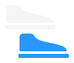

Tenis para cada paso.
Elige tu modelo y confirma tu talla por WhatsApp.
Destacados
Algunos de los modelos que puedes pedir hoy.
Catálogo
Filtra por público, categoría, marca o talla.
No hay modelos con esos filtros.
Prueba con otra categoría, marca o talla.
Cómo comprar
1
Elige tu modelo
Recorre el catálogo y filtra por público, categoría, marca o talla.
2
Confirma tu talla
Escríbenos por WhatsApp con la referencia del modelo que te gustó.
3
Recibe tus tenis
Contraentrega en Bogotá, Tunja y Chiquinquirá. Al resto del país enviamos.
Únete a la comunidad.
Recibe primero los modelos nuevos en nuestro grupo de difusión de WhatsApp.
Comunidad en WhatsApp

fueradepar.netlify.app